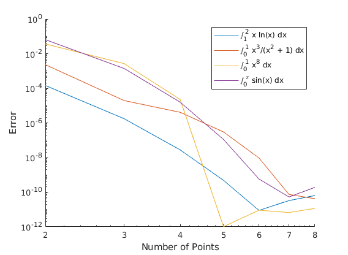

Zachary Kaplan
MATH 340 Assignment 10 4/12/18
Contents
Problem 1
% Number of points to use. figure axes('xscale', 'log', 'yscale', 'log') hold on xlabel('Number of Points'); ylabel('Error'); n = 2:8; % x ln(x) f = @(x) x .* log(x); [a, b] = deal(1, 2); trueval = -3/4 + 2*log(2); vals = glquad(f, a, b, n, []); plot(n, abs(trueval - vals)); % x^3 / (x^2 + 1) f = @(x) x.^3 ./ (x.^2 + 1); [a, b] = deal(0, 1); trueval = 1/2 - log(2)/2; vals = glquad(f, a, b, n, []); plot(n, abs(trueval - vals)); % x^8 f = @(x) x.^8; [a, b] = deal(0, 1); trueval = 1/9; vals = glquad(f, a, b, n, []); plot(n, abs(trueval - vals)); % sin(x) f = @(x) sin(x); [a, b] = deal(0, pi); trueval = 2; vals = glquad(f, a, b, n, []); plot(n, abs(trueval - vals)); legend('\int_1^{ 2} x ln(x) dx', '\int_0^{ 1} x^3/(x^2 + 1) dx', ... '\int_0^{ 1} x^8 dx', '\int_0^{ \pi} sin(x) dx'); fprintf('Functions Used:\n'); dbtype glquad
Functions Used:
1 function vals = glquad(f, a, b, n, tables)
2 % Returns the approximation of \int_a^bfdx with n points.
3 if isempty(tables)
4 quadtables = { ... Entries take the form xj wj
5 [], ... n = 1
6 [ ... n = 2
7 -0.5773502692 1.0; ...
8 +0.5773502692 1.0; ...
9 ], [ ... n = 3
10 -0.7745966692 0.5555555556; ...
11 +0.7745966692 0.5555555556; ...
12 0.0 0.8888888889; ...
13 ], [ ... n = 4
14 -0.8611363116 0.3478548451; ...
15 +0.8611363116 0.3478548451; ...
16 -0.3399810436 0.6521451549; ...
17 +0.3399810436 0.6521451549; ...
18 ], [ ... n = 5
19 -0.9061798459 0.2369268851; ...
20 +0.9061798459 0.2369268851; ...
21 -0.5384693101 0.4786286705; ...
22 +0.5384693101 0.4786286705; ...
23 0.0 0.5688888889; ...
24 ], [ ... n = 6
25 -0.9324695142 0.1713244924; ...
26 +0.9324695142 0.1713244924; ...
27 -0.6612093865 0.3607615730; ...
28 +0.6612093865 0.3607615730; ...
29 -0.2386191861 0.4679139346; ...
30 +0.2386191861 0.4679139346; ...
31 ], [ ... n = 7
32 -0.9491079123 0.1294849662; ...
33 +0.9491079123 0.1294849662; ...
34 -0.7415311856 0.2797053915; ...
35 +0.7415311856 0.2797053915; ...
36 -0.4058451514 0.3818300505; ...
37 +0.4058451514 0.3818300505; ...
38 0.0 0.4179591837; ...
39 ], [ ... n = 8
40 -0.9602898565 0.1012285363; ...
41 +0.9602898565 0.1012285363; ...
42 -0.7966664774 0.2223810345; ...
43 +0.7966664774 0.2223810345; ...
44 -0.5255324099 0.3137066459; ...
45 +0.5255324099 0.3137066459; ...
46 -0.1834346425 0.3626837834; ...
47 +0.1834346425 0.3626837834; ...
48 ] ...
49 };
50 else
51 quadtables = tables;
52 end
53
54 vals = zeros(1, length(n));
55 for i = 1:length(n)
56 vals(i) = (b-a)/2 * sum(quadtables{n(i)}(:, 2) .* ...
57 f((quadtables{n(i)}(:, 1) + 1)/2*(b-a) + a));
58 end
59 end
